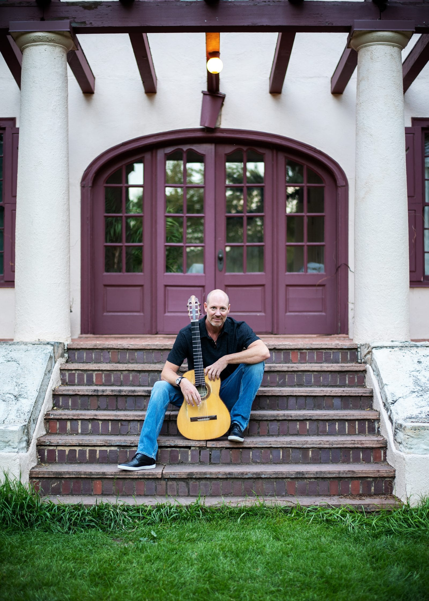
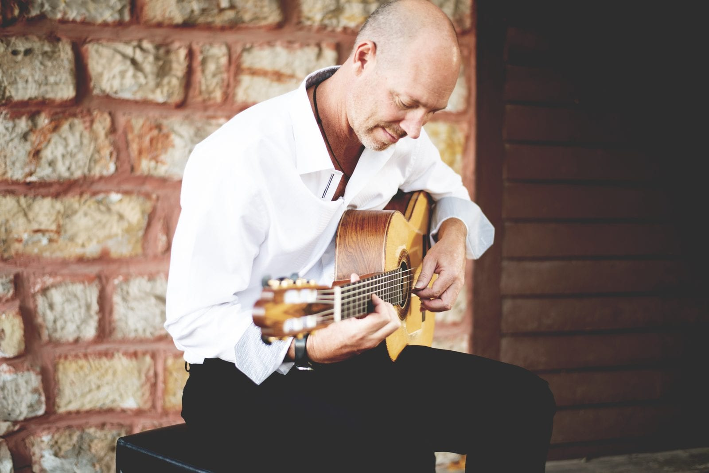

Solo acoustic guitar
A Spanish guitarist for hire in Denver for weddings, dinners and events.
There’s something about a Spanish guitar that makes an ordinary dinner feel like a vacation. This is the act to book when you want that sound from one musician who can set up in almost any corner of your venue.
It’s an excellent choice for wedding ceremonies, cocktail hours, dinner parties and milestone birthdays. Want something bigger? Check out Dirty Flamenco, our flamenco trio with guitar, bass and cajón.
We can build the music around your event, from the songs to what the guitarist wears. Here’s how booking through Signet works.
Trusted and booked by
Song list
What does a Spanish guitarist play?
The song list usually includes classic Spanish guitar pieces like Malagueña and Entre dos Aguas, along with rumbas and tangos. Many guests won’t know the names, but almost everyone recognizes the sound. We can also play familiar songs in the same style. Can’t Help Falling in Love is a popular choice for a processional, for instance, and the Beatles sound great on Spanish guitar.
It’s all instrumental. At a wedding, the guitarist will follow what’s happening, so the music can keep going while guests find their seats and wrap up when the wedding party reaches the front. We’ll put the song list together with you, and if you want a song that isn’t on it, let us know when you book and we can usually learn it.
Prefer blues, roots or jazz? Check out our solo guitarist.
Song list
A sample of songs
- ZambraGary Meyers
- VolareGipsy Kings
- TamacúnRodrigo y Gabriela
- TempestJesse Cook
- Desperado's ShadeGary Meyers
- Cafe MochaJesse Cook
- Nico's RumbaGary Meyers
- AzulJesse Cook
- GranadaGary Meyers
- Mario Takes a WalkJesse Cook
- Rumba-n-RollGary Meyers
- BrioJesse Cook
- Andalusian TrailGary Meyers
- Taxi BrasilJesse Cook
- Bart's RumbaGary Meyers
- ShakeJesse Cook
- Spanish RiverGary Meyers
- La Rumba d'El JefeJesse Cook
- EtudeGary Meyers
- Alegrias for DanceGary Meyers
- Tango GranadaGary Meyers
- Tears (aka Lagrima)Gary Meyers
- GranadinasGary Meyers
- Amazing GraceGary Meyers
- Old WaysGary Meyers
- Dancer's MoonGary Meyers
- Cliffs EdgeGary Meyers
- Pyramid SecretsGary Meyers
- Texas SunsetGary Meyers
- Coming StormGary Meyers
Occasions
Perfect booking for
- The wedding ceremony
- A Spanish guitarist can play the whole ceremony, from the prelude and processional to the recessional, and any quiet moment in between. It’s an excellent choice if you want something warm and romantic.
- The cocktail hour
- Rumbas and familiar songs make a great cocktail hour, at a volume where your guests can talk easily.
- The dinner party, and the milestone birthday
- A Spanish guitarist can play through the whole meal, and it’s an easy way to make a dinner or birthday feel like a special occasion, whether you’re in Denver or up in the mountains.
- The corporate dinner
- A solo guitarist is a nice touch for a client dinner or member event, and it makes the evening feel thoughtfully planned.
- Proposals & surprises
- Looking for just an hour of music? We can do that for a proposal, a toast at a 60th Birthday or an anniversary surprise.
- Memorial services
- We can play a memorial or graveside service, with the music your family chooses.
Want to know more about prices? Check out our Live Music Cost Guide.
Video Clips
Watch a Spanish guitarist play
Here are a few live clips, including a farruca, Can’t Help Falling in Love and a short piece by the flamenco guitarist Sabicas.



What clients say
“[He] was perfect for our Spanish themed event. Great music and extremely nice.”
Spanish guitarist questions
Want to know more? We’ve answered more common questions here.
Is Spanish guitar the same as flamenco?
How loud is it?
Who will the guitarist be?
Can a Spanish guitarist play a wedding ceremony outdoors?
Looking for a Spanish guitarist? Send us the date and we'll reply with availability and costs.
Live music for your event, from a solo musician to a full band, with sound support that’s the right size for the venue and a personal contact for the night.
Want photos or video of your event? Add them to your booking.